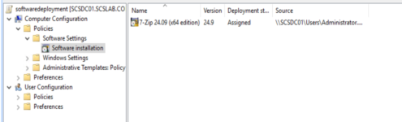
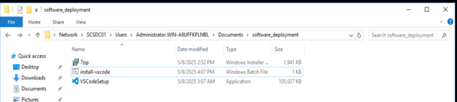

Configuring Software Deployment via Group Policy (GPO) is a powerful way to automatically install applications (e.g., antivirus, Office tools, custom apps) on domain-joined client machines.
Below is a complete, step-by-step guide to deploy software using GPO in your scslab.corp domain.
On a file server or DC:
\\scsdc01\SoftwareDeploymentExample path: \\scsdc01\SoftwareDeployment\7zip.msi
\\scsdc01\SoftwareDeployment\7zip.msi through the network path (do NOT use a local drive like C:\ — clients would look on their own C: drive)
On a client PC in the OU:
gpupdate /force
Then reboot the PC.
Upon startup, the MSI will install automatically before login.
Deploying .exe applications silently across multiple Windows clients in a domain environment can be efficiently done using Group Policy with Scheduled Tasks. This guide walks you through deploying any .exe application (e.g., installers like Notepad++, Chrome, VLC) as a one-time install using Group Policy.
Group Policy's Scheduled Task feature allows you to:
Store your .exe installer and batch script in a shared folder accessible by domain computers:
\\scsdc01\SoftwareDeployment\VSCodeSetup-x64.exe
Example: install-vscode.bat
@echo off
SET "logfile=%SystemRoot%\Temp\vscode-install.log"
IF EXIST "C:\Program Files\Microsoft VS Code\Code.exe" (
echo VS Code already installed. >> "%logfile%"
exit /b
)
echo Installing VS Code... >> "%logfile%"
"\\scsdc01\SoftwareDeployment\VSCodeSetup-x64.exe" /VERYSILENT /NORESTART /MERGETASKS=!runcode >> "%logfile%" 2>&1
echo Install completed at %DATE% %TIME% >> "%logfile%"
In my lab the files first lived in the Administrator's Documents folder (screenshot below); for deployment, keep both the installer and the script in the SoftwareDeployment share as shown. Modify the silent parameters (/S, /SILENT, /VERYSILENT, etc.) as per the application documentation.

gpmc.mscComputer Configuration
└─ Preferences
└─ Control Panel Settings
└─ Scheduled Tasks/c \\scsdc01\SoftwareDeployment\install-vscode.batgpupdate /force, then restart it with shutdown /r /t 00x0. If it runs again at a later boot, the script sees VS Code is installed and exits| Component | Value |
|---|---|
| Installer Path | \\scsdc01\SoftwareDeployment\VSCodeSetup-x64.exe |
| Script Name | install-vscode.bat |
| Deployment Type | GPO > Scheduled Task (One-time) |
| Run As | SYSTEM |
| Logging Location | C:\Windows\Temp\vscode-install.log |
By using a scheduled task in Group Policy, you ensure a professional and efficient deployment of Visual Studio Code in your environment. This approach keeps your startup clean, avoids redundant installs, and provides full automation.